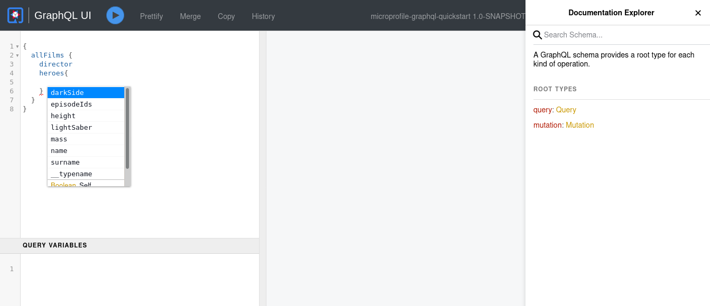

SmallRye GraphQL
This guide demonstrates how your Quarkus application can use SmallRye GraphQL, an implementation of the MicroProfile GraphQL specification.
As the GraphQL specification website states:
GraphQL is a query language for APIs and a runtime for fulfilling those queries with your existing data. GraphQL provides a complete and understandable description of the data in your API, gives clients the power to ask for exactly what they need and nothing more, makes it easier to evolve APIs over time, and enables powerful developer tools.
GraphQL was originally developed by Facebook in 2012 and has been an open standard since 2015.
GraphQL is not a replacement for REST API specification but merely an alternative. Unlike REST, GraphQL API’s have the ability to benefit the client by:
- Preventing Over-fetching and Under-fetching
-
REST APIs are server-driven fixed data responses that cannot be determined by the client. Although the client does not require all the fields the client must retrieve all the data hence
Over-fetching. A client may also require multiple REST API calls according to the first call (HATEOAS) to retrieve all the data that is required therebyUnder-fetching. - API Evolution
-
Since GraphQL API’s returns data that are requested by the client adding additional fields and capabilities to existing API will not create breaking changes to existing clients.
Prerequisites
To complete this guide, you need:
-
Roughly 15 minutes
-
An IDE
-
JDK 17+ installed with
JAVA_HOMEconfigured appropriately -
Apache Maven 3.9.9
-
Optionally the Quarkus CLI if you want to use it
-
Optionally Mandrel or GraalVM installed and configured appropriately if you want to build a native executable (or Docker if you use a native container build)
Architecture
In this guide, we build a simple GraphQL application that exposes a GraphQL API
at /graphql.
This example was inspired by a popular GraphQL API.
Solution
We recommend that you follow the instructions in the next sections and create the application step by step. However, you can go right to the completed example.
Clone the Git repository: git clone -b development https://github.com/quarkusio/quarkus-quickstarts.git, or download an archive.
The solution is located in the microprofile-graphql-quickstart directory.
Creating the Maven Project
First, we need a new project. Create a new project with the following command:
For Windows users:
-
If using cmd, (don’t use backward slash
\and put everything on the same line) -
If using Powershell, wrap
-Dparameters in double quotes e.g."-DprojectArtifactId=microprofile-graphql-quickstart"
This command generates a project, importing the smallrye-graphql extension.
If you already have your Quarkus project configured, you can add the smallrye-graphql extension
to your project by running the following command in your project base directory:
quarkus extension add quarkus-smallrye-graphql./mvnw quarkus:add-extension -Dextensions='quarkus-smallrye-graphql'./gradlew addExtension --extensions='quarkus-smallrye-graphql'This will add the following to your build file:
<dependency>
<groupId>io.quarkus</groupId>
<artifactId>quarkus-smallrye-graphql</artifactId>
</dependency>implementation("io.quarkus:quarkus-smallrye-graphql")Preparing an Application: GraphQL API
In this section we will start creating the GraphQL API.
First, create the following entities representing a film from a galaxy far, far away:
package org.acme.microprofile.graphql;
public class Film {
public String title;
public Integer episodeID;
public String director;
public LocalDate releaseDate;
}
public class Hero {
public String name;
public String surname;
public Double height;
public Integer mass;
public Boolean darkSide;
public LightSaber lightSaber;
public List<Integer> episodeIds = new ArrayList<>();
}
enum LightSaber {
RED, BLUE, GREEN
}| For readability we use classes with public fields, but classes with private fields with public getters and setters will also work. |
The classes we have just created describe the GraphQL schema which is a set of possible data (objects, fields, relationships) that a client can access.
Let’s continue with an example CDI bean, that would work as a repository:
@ApplicationScoped
public class GalaxyService {
private List<Hero> heroes = new ArrayList<>();
private List<Film> films = new ArrayList<>();
public GalaxyService() {
Film aNewHope = new Film();
aNewHope.title = "A New Hope";
aNewHope.releaseDate = LocalDate.of(1977, Month.MAY, 25);
aNewHope.episodeID = 4;
aNewHope.director = "George Lucas";
Film theEmpireStrikesBack = new Film();
theEmpireStrikesBack.title = "The Empire Strikes Back";
theEmpireStrikesBack.releaseDate = LocalDate.of(1980, Month.MAY, 21);
theEmpireStrikesBack.episodeID = 5;
theEmpireStrikesBack.director = "George Lucas";
Film returnOfTheJedi = new Film();
returnOfTheJedi.title = "Return Of The Jedi";
returnOfTheJedi.releaseDate = LocalDate.of(1983, Month.MAY, 25);
returnOfTheJedi.episodeID = 6;
returnOfTheJedi.director = "George Lucas";
films.add(aNewHope);
films.add(theEmpireStrikesBack);
films.add(returnOfTheJedi);
Hero luke = new Hero();
luke.name = "Luke";
luke.surname = "Skywalker";
luke.height = 1.7;
luke.mass = 73;
luke.lightSaber = LightSaber.GREEN;
luke.darkSide = false;
luke.episodeIds.addAll(Arrays.asList(4, 5, 6));
Hero leia = new Hero();
leia.name = "Leia";
leia.surname = "Organa";
leia.height = 1.5;
leia.mass = 51;
leia.darkSide = false;
leia.episodeIds.addAll(Arrays.asList(4, 5, 6));
Hero vader = new Hero();
vader.name = "Darth";
vader.surname = "Vader";
vader.height = 1.9;
vader.mass = 89;
vader.darkSide = true;
vader.lightSaber = LightSaber.RED;
vader.episodeIds.addAll(Arrays.asList(4, 5, 6));
heroes.add(luke);
heroes.add(leia);
heroes.add(vader);
}
public List<Film> getAllFilms() {
return films;
}
public Film getFilm(int id) {
return films.get(id);
}
public List<Hero> getHeroesByFilm(Film film) {
return heroes.stream()
.filter(hero -> hero.episodeIds.contains(film.episodeID))
.collect(Collectors.toList());
}
public void addHero(Hero hero) {
heroes.add(hero);
}
public Hero deleteHero(int id) {
return heroes.remove(id);
}
public List<Hero> getHeroesBySurname(String surname) {
return heroes.stream()
.filter(hero -> hero.surname.equals(surname))
.collect(Collectors.toList());
}
}Now, let’s create our first GraphQL API.
Edit the org.acme.microprofile.graphql.FilmResource class as following:
@GraphQLApi (1)
public class FilmResource {
@Inject
GalaxyService service;
@Query("allFilms") (2)
@Description("Get all Films from a galaxy far far away") (3)
public List<Film> getAllFilms() {
return service.getAllFilms();
}
}| 1 | @GraphQLApi annotation indicates that the CDI bean will be a GraphQL endpoint |
| 2 | @Query annotation defines that this method will be queryable with the name allFilms |
| 3 | Documentation of the queryable method |
The value of the @Query annotation is optional and would implicitly
be defaulted to the method name if absent.
|
This way we have created our first queryable API which we will later expand.
Launch
Launch the quarkus application in dev mode:
quarkus dev./mvnw quarkus:dev./gradlew --console=plain quarkusDevIntrospect
The full schema of the GraphQL API can be retrieved by calling the following:
curl http://localhost:8080/graphql/schema.graphqlThe server will return the complete schema of the GraphQL API.
GraphQL UI
| Experimental - not included in the MicroProfile specification |
GraphQL UI is a great tool permitting easy interaction with your GraphQL APIs.
The Quarkus smallrye-graphql extension ships with GraphiQL and enables it by default in dev and test modes,
but it can also be explicitly configured for production mode as well, by setting the quarkus.smallrye-graphql.ui.always-include configuration property to true.
The GraphQL UI can be accessed from http://localhost:8080/q/graphql-ui/ .

Have a look at the Authorization of Web Endpoints Guide on how to add/remove security for the GraphQL UI.
Query the GraphQL API
Now visit the GraphQL UI page that has been deployed in dev mode.
Enter the following query to the GraphQL UI and press the play button:
query allFilms {
allFilms {
title
director
releaseDate
episodeID
}
}Since our query contains all the fields in the Film class
we will retrieve all the fields in our response. Since GraphQL API
responses are client determined, the client can choose which fields
it will require.
Let’s assume that our client only requires title and releaseDate
making the previous call to the API Over-fetching of unnecessary
data.
Enter the following query into the GraphQL UI and hit the play button:
query allFilms {
allFilms {
title
releaseDate
}
}Notice in the response we have only retrieved the required fields.
Therefore, we have prevented Over-fetching.
Let’s continue to expand our GraphQL API by adding the following to the
FilmResource class.
@Query
@Description("Get a Films from a galaxy far far away")
public Film getFilm(@Name("filmId") int id) {
return service.getFilm(id);
}
Notice how we have excluded the value in the @Query annotation.
Therefore, the name of the query is implicitly set as the method name
excluding the get.
|
This query will allow the client to retrieve the film by id, and the @Name annotation on the parameter
changes the parameter name to filmId rather than the default id that it would be if you omit the @Name annotation.
Enter the following into the GraphQL UI and make a request.
query getFilm {
film(filmId: 1) {
title
director
releaseDate
episodeID
}
}The film query method requested fields can be determined
as such in our previous example. This way we can retrieve individual
film information.
However, say our client requires both films with filmId 0 and 1.
In a REST API the client would have to make two calls to the API.
Therefore, the client would be Under-fetching.
In GraphQL, it is possible to make multiple queries at once.
Enter the following into the GraphQL UI to retrieve two films:
query getFilms {
film0: film(filmId: 0) {
title
director
releaseDate
episodeID
}
film1: film(filmId: 1) {
title
director
releaseDate
episodeID
}
}This enabled the client to fetch the required data in a single request.
Expanding the API
Until now, we have created a GraphQL API to retrieve film data.
We now want to enable the clients to retrieve the Hero data of the Film.
Add the following to our FilmResource class:
public List<Hero> heroes(@Source Film film) { (1)
return service.getHeroesByFilm(film);
}| 1 | Enable List<Hero> data to be added to queries that respond with Film |
By adding this method we have effectively changed the schema of the GraphQL API.
Although the schema has changed the previous queries will still work.
Since we only expanded the API to be able to retrieve the Hero data of the Film.
Enter the following into the GraphQL UI to retrieve the film and hero data.
query getFilmHeroes {
film(filmId: 1) {
title
director
releaseDate
episodeID
heroes {
name
height
mass
darkSide
lightSaber
}
}
}The response now includes the heroes of the film.
Batching
When you are exposing a Collection return like our getAllFilms, you might want to use the batch form of the above, to more efficiently fetch
the heroes:
public List<List<Hero>> heroes(@Source List<Film> films) { (1)
// Here fetch all hero lists
}| 1 | Here receive the films as a batch, allowing you to fetch the corresponding heroes. |
Non blocking
Queries can be made reactive by using Uni as a return type, or adding @NonBlocking to the method:
@Query
@Description("Get a Films from a galaxy far far away")
public Uni<Film> getFilm(int filmId) {
// ...
}Or you can use @NonBlocking:
@Query
@Description("Get a Films from a galaxy far far away")
@NonBlocking
public Film getFilm(int filmId) {
// ...
}Using Uni or @NonBlocking means that the request will be executed on Event-loop threads rather than Worker threads.
You can mix Blocking and Non-blocking in one request,
@Query
@Description("Get a Films from a galaxy far far away")
@NonBlocking
public Film getFilm(int filmId) {
// ...
}
public List<Hero> heroes(@Source Film film) {
return service.getHeroesByFilm(film);
}Above will fetch the film on the event-loop threads, but switch to the worker thread to fetch the heroes.
Abstract Types
The current schema is simple with only two concrete types, Hero and Film.
Now we want to expand our API with additional types and add some abstractions
that make interacting with them easy for clients.
Interfaces
Let’s give our heroes some allies.
First, create a new entity to represent our Ally.
public class Ally {
public String name;
public String surname;
public Hero partner;
}Update the GalaxyService to have some allies.
private List<Ally> allies = new ArrayList();
public GalaxyService() {
// ...
Ally jarjar = new Ally();
jarjar.name = "Jar Jar";
jarjar.surname = "Binks";
allies.add(jarjar);
}
public List<Ally> getAllAllies() {
return allies;
}Let’s also update FilmResource to allow clients to query for all allies:
@Query
public List<Ally> allies() {
return service.getAllAllies();
}Enter the following into the GraphQL UI and make a request.
query getAllies {
allies {
name
surname
}
}Notice that Ally has a some of the same fields as a Hero.
To better make queries easier for clients, let’s create an abstraction for any character.
Create a new Java interface that defines our common character traits.
public interface Character {
(1)
String getName();
String getSurname();
}| 1 | Getters defined in an interface will define the GraphQL fields that it contains |
Now, update our Hero and Ally entities to implement this interface.
public class Hero implements Character {
// ...
(1)
public String getName() {
return name;
}
(1)
public String getSurname() {
return surname;
}
}
public class Ally implements Character {
// ...
(1)
public String getName() {
return name;
}
(1)
public String getSurname() {
return surname;
}
}| 1 | Because interfaces can’t define fields, we have to implement the getters |
By adding an interface and updating existing entities to implement it, we have effectively changed the schema.
The updated schema will now include the new Ally type and Character interface.
(1)
interface Character {
name: String
surname: String
}
(2)
type Ally implements Character {
name: String
surname: String
partner: Hero
}
(3)
type Hero implements Character {
name: String
surname: String
# ...
}| 1 | The Character interface was defined with the getters as fields |
| 2 | The Ally type was added and it implements Character |
| 3 | The Hero type was updated to implement Character |
Update our GalaxyService to provide all characters.
public List<Character> getAllCharacters() {
List<Character> characters = new ArrayList<>();
characters.addAll(heroes);
characters.addAll(allies);
return characters;
}Now we can allow clients to query for all characters, not just heroes.
Add the following to our FilmResource class:
@Query
@Description("Get all characters from a galaxy far far away")
public List<Character> characters() {
return service.getAllCharacters();
}Enter the following into the GraphQL UI and make a request.
query getCharacters {
characters {
name
surname
}
}Unions
| Experimental - not included in the MicroProfile specification |
So far, our API has only allowed us to query directly for an entity or list of entities.
Now we want to allow clients to search all of our entities.
While Hero and Ally have a shared abstract type of Character, there is no abstraction that also includes Film.
First, create this new abstract type representing the possible return types for a search result.
package org.acme.microprofile.graphql;
import io.smallrye.graphql.api.Union;
@Union (1)
public interface SearchResult {
}| 1 | @Union is required to indicate this Java interface represents a GraphQL union, not a GraphQL interface |
| The Java interface representing the GraphQL union does not have to be empty, but any getters defined will not explicitly change the GraphQL schema. |
Update our entities to implement SearchResult:
public class Film implements SearchResult {
// ...
}
public interface Character implements SearchResult {
// ...
}
public class Hero implements Character {
// ...
}
public class Ally implements Character {
// ...
}Update GalaxyService to provide search:
public List<SearchResult> search(String query) {
List<SearchResult> results = new ArrayList<>();
List<Film> matchingFilms = films.stream()
.filter(film -> film.title.contains(query)
|| film.director.contains(query))
.collect(Collectors.toList());
results.addAll(matchingFilms);
List<Character> matchingCharacters = getAllCharacters().stream()
.filter(character -> character.getName().contains(query)
|| character.getSurname().contains(query))
.collect(Collectors.toList());
results.addAll(matchingCharacters);
return results;
}Add the following to our FilmResource class:
@Query
@Description("Search for heroes or films")
public List<SearchResult> search(String query) {
return service.search(query);
}Enter the following into the GraphQL UI and make a request.
query searchTheGalaxy {
search(query: "a") {
... on Film {
title
director
}
... on Character {
name
surname
}
}
}
We are able to use the Character interface because the SearchResult union contains members that implement it.
|
Mutations
Mutations are used when data is created, updated or deleted.
Let’s now add the ability to add and delete heroes to our GraphQL API.
Add the following to our FilmResource class:
@Mutation
public Hero createHero(Hero hero) {
service.addHero(hero);
return hero;
}
@Mutation
public Hero deleteHero(int id) {
return service.deleteHero(id);
}Enter the following into the GraphQL UI to insert a Hero:
mutation addHero {
createHero(hero: {
name: "Han",
surname: "Solo"
height: 1.85
mass: 80
darkSide: false
episodeIds: [4, 5, 6]
}
)
{
name
surname
}
}By using this mutation we have created a Hero entity in our service.
Notice how in the response we have retrieved the name and surname
of the created Hero. This is because we selected to retrieve
these fields in the response within the { } in the mutation query.
This can easily be a server side generated field that the client may require.
Let’s now try deleting an entry:
mutation DeleteHero {
deleteHero(id :3){
name
surname
}
}Similar to the createHero mutation method we also retrieve the name and
surname of the hero we have deleted which is defined in { }.
Subscriptions
Subscriptions allow you to subscribe to a query. It allows you to receive events and is using web sockets. See the GraphQL over WebSocket Protocol spec for more details.
Example: We want to know when new Heroes are being created:
BroadcastProcessor<Hero> processor = BroadcastProcessor.create(); (1)
@Mutation
public Hero createHero(Hero hero) {
service.addHero(hero);
processor.onNext(hero); (2)
return hero;
}
@Subscription
public Multi<Hero> heroCreated(){
return processor; (3)
}| 1 | The Multi processor that will broadcast any new Heroes |
| 2 | When adding a new Hero, also broadcast it |
| 3 | Make the stream available in the schema and as a WebSocket during runtime |
Any client that now connect to the /graphql WebSocket connection will receive events on new Heroes being created:
subscription ListenForNewHeroes {
heroCreated {
name
surname
}
}Creating Queries by fields
Queries can also be done on individual fields. For example, let’s create a method to query heroes by their last name.
Add the following to our FilmResource class:
@Query
public List<Hero> getHeroesWithSurname(@DefaultValue("Skywalker") String surname) {
return service.getHeroesBySurname(surname);
}By using the @DefaultValue annotation we have determined that the surname value
will be Skywalker when the parameter is not provided.
Test the following queries with the GraphQL UI:
query heroWithDefaultSurname {
heroesWithSurname{
name
surname
lightSaber
}
}
query heroWithSurnames {
heroesWithSurname(surname: "Vader") {
name
surname
lightSaber
}
}Context
You can get information about the GraphQL request anywhere in your code, using this experimental, SmallRye specific feature:
@Inject
Context context;or as a parameter in your method if you are in the GraphQLApi class, for instance:
@Query
@Description("Get a Films from a galaxy far far away")
public Film getFilm(Context context, int filmId) {
// ...
}The context object allows you to get:
-
the original request (Query/Mutation)
-
the arguments
-
the path
-
the selected fields
-
any variables
This allows you to optimize the downstream queries to the datastore.
See the JavaDoc for more details.
GraphQL-Java
This context object also allows you to fall down to the underlying graphql-java features by using the leaky abstraction:
DataFetchingEnvironment dfe = context.unwrap(DataFetchingEnvironment.class);You can also get access to the underlying graphql-java during schema generation, to add your own features directly:
public GraphQLSchema.Builder addMyOwnEnum(@Observes GraphQLSchema.Builder builder) {
// Here add your own features directly, example adding an Enum
GraphQLEnumType myOwnEnum = GraphQLEnumType.newEnum()
.name("SomeEnum")
.description("Adding some enum type")
.value("value1")
.value("value2").build();
return builder.additionalType(myOwnEnum);
}By using the @Observer you can add anything to the Schema builder.
For the Observer to work, you need to enable events. In application.properties, add the following: quarkus.smallrye-graphql.events.enabled=true.
|
Adapting
Adapt to Scalar
Another SmallRye specific experimental feature, allows you to map an existing scalar (that is mapped by the implementation to a certain Java type) to another type,
or to map complex object, that would typically create a Type or Input in GraphQL, to an existing scalar.
Adapting an existing Scalar to another type:
public class Movie {
@AdaptToScalar(Scalar.Int.class)
Long idLongThatShouldChangeToInt;
// ....
}Above will adapt the Long java type to an Int Scalar type, rather than the default BigInteger.
Adapting a complex object to a Scalar type:
public class Person {
@AdaptToScalar(Scalar.String.class)
Phone phone;
// ....
}This will, rather than creating a Type or Input in GraphQL, map to a String scalar.
To be able to do the above, the Phone object needs to have a constructor that takes a String (or Int / Date / etc.),
or have a setter method for the String (or Int / Date / etc.),
or have a fromString (or fromInt / fromDate - depending on the Scalar type) static method.
For example:
public class Phone {
private String number;
// Getters and setters....
public static Phone fromString(String number) {
Phone phone = new Phone();
phone.setNumber(number);
return phone;
}
}See more about the @AdaptToScalar feature in the JavaDoc.
Adapt with
Another option for more complex cases is to provide an Adapter. You can then do the mapping yourself in the adapter.
See more about the AdaptWith feature in the JavaDoc.
For example:
public class Profile {
// Map this to an email address
@AdaptWith(AddressAdapter.class)
public Address address;
// other getters/setters...
}
public class AddressAdapter implements Adapter<EmailAddress, Address> {
@Override
public Address from(EmailAddress email) {
Address a = new Address();
a.addressType = AddressType.email;
a.addLine(email.getValue());
return a;
}
@Override
public EmailAddress to(Address address) {
if (address != null && address.addressType != null && address.addressType.equals(AddressType.email)) {
return new EmailAddress(address.lines.get(0));
}
return null;
}
}
@JsonbTypeAdapter is also supported.
|
Built-in support for Maps
By default, due to the fact that maps are hard to model in a schema (as the keys and values can be dynamic at runtime) GraphQL does not support maps by default.
Using the above adaption, Map support is added for Quarkus and are mapped to an Entry<Key,Value> with an optional key parameter.
This allows you to return a map, and optionally query it by key.
Example:
@Query
public Map<ISO6391, Language> language() {
return languageService.getLanguages();
}
public enum ISO6391 {
af,
en,
de,
fr
}
public class Language {
private ISO6391 iso6391;
private String nativeName;
private String enName;
private String please;
private String thankyou;
// Getters & Setters
}| The key and value object can be any of Enum, Scalar or Complex object |
You can now query the whole map with all the fields:
{
language{
key
value {
enName
iso6391
nativeName
please
thankyou
}
}
}This will return a result like this for example:
{
"data": {
"language": [
{
"key": "fr",
"value": {
"enName": "french",
"iso6391": "fr",
"nativeName": "français",
"please": "s'il te plaît",
"thankyou": "merci"
}
},
{
"key": "af",
"value": {
"enName": "afrikaans",
"iso6391": "af",
"nativeName": "afrikaans",
"please": "asseblief",
"thankyou": "dankie"
}
},
{
"key": "de",
"value": {
"enName": "german",
"iso6391": "de",
"nativeName": "deutsch",
"please": "bitte",
"thankyou": "danke dir"
}
},
{
"key": "en",
"value": {
"enName": "english",
"iso6391": "en",
"nativeName": "english",
"please": "please",
"thankyou": "thank you"
}
}
]
}
}You can also query by key
{
language (key:af){
value {
please
thankyou
}
}
}That will return only that value in the map:
{
"data": {
"language": [
{
"value": {
"please": "asseblief",
"thankyou": "dankie"
}
}
]
}
}| The default map adapter can to overridden with our own implementation. |
Error code
You can add an error code on the error output in the GraphQL response by using the (SmallRye specific) @ErrorCode:
@ErrorCode("some-business-error-code")
public class SomeBusinessException extends RuntimeException {
// ...
}When SomeBusinessException occurs, the error output will contain the Error code:
{
"errors": [
{
"message": "Unexpected failure in the system. Jarvis is working to fix it.",
"locations": [
{
"line": 2,
"column": 3
}
],
"path": [
"annotatedCustomBusinessException"
],
"extensions": {
"exception": "io.smallrye.graphql.test.apps.error.api.ErrorApi$AnnotatedCustomBusinessException",
"classification": "DataFetchingException",
"code": "some-business-error-code" (1)
}
}
],
"data": {
...
}
}| 1 | The error code |
Additional Notes
If you are using the smallrye-graphql extension and the micrometer metrics extension is present and metrics are
enabled, you may encounter a java.lang.NoClassDefFoundError as some versions of the smallrye-graphql extension
have runtime requirements on the Microprofile Metrics API. Add the following MicroProfile Metrics API dependency
to resolve the issue:
<dependency>
<groupId>org.eclipse.microprofile.metrics</groupId>
<artifactId>microprofile-metrics-api</artifactId>
</dependency>implementation("org.eclipse.microprofile.metrics:microprofile-metrics-api")Conclusion
SmallRye GraphQL enables clients to retrieve the exact data that is
required preventing Over-fetching and Under-fetching.
The GraphQL API can be expanded without breaking previous queries enabling easy
API evolution.
Configuration Reference
Configuration property fixed at build time - All other configuration properties are overridable at runtime
Configuration property |
Type |
Default |
|---|---|---|
The rootPath under which queries will be served. Default to graphql By default, this value will be resolved as a path relative to Environment variable: Show more |
string |
|
Enable Apollo Federation. If this value is unspecified, then federation will be enabled automatically if any GraphQL Federation annotations are detected in the application. Environment variable: Show more |
boolean |
|
Enable batch resolving for federation. Disabled by default. Environment variable: Show more |
boolean |
|
Enable metrics. By default, this is false. If set to true, a metrics extension is required. Environment variable: Show more |
boolean |
|
Enable tracing. By default, this will be enabled if the tracing extension is added. Environment variable: Show more |
boolean |
|
Enable eventing. Allow you to receive events on bootstrap and execution. Environment variable: Show more |
boolean |
|
Enable non-blocking support. Default is true. Environment variable: Show more |
boolean |
|
Enable GET Requests. Allow queries via HTTP GET. Environment variable: Show more |
boolean |
|
Enable Query parameter on POST Requests. Allow POST request to override or supply values in a query parameter. Environment variable: Show more |
boolean |
|
Change the type naming strategy. All possible strategies are: default, merge-inner-class, full Environment variable: Show more |
string |
|
List of extension fields that should be included in the error response. By default, none will be included. Examples of valid values include [exception,classification,code,description,validationErrorType,queryPath] Environment variable: Show more |
list of string |
|
List of Runtime Exceptions class names that should show the error message. By default, Runtime Exception messages will be hidden and a generic Environment variable: Show more |
list of string |
|
List of Checked Exceptions class names that should hide the error message. By default, Checked Exception messages will show the exception message. Environment variable: Show more |
list of string |
|
The default error message that will be used for hidden exception messages. Defaults to "Server Error" Environment variable: Show more |
string |
|
Print the data fetcher exception to the log file. Default Environment variable: Show more |
boolean |
|
Make the schema available over HTTP. Environment variable: Show more |
boolean |
|
Include the Scalar definitions in the schema. Environment variable: Show more |
boolean |
|
Include the schema internal definition in the schema. Environment variable: Show more |
boolean |
|
Include Directives in the schema. Environment variable: Show more |
boolean |
|
Include Introspection Types in the schema. Environment variable: Show more |
boolean |
|
Log the payload (and optionally variables) to System out. Environment variable: Show more |
|
|
Exceptions that should be unwrapped (class names). Environment variable: Show more |
list of string |
|
Subprotocols that should be supported by the server for graphql-over-websocket use cases. Allowed subprotocols are "graphql-ws" and "graphql-transport-ws". By default, both are enabled. Environment variable: Show more |
list of string |
|
Set to true if ignored chars should be captured as AST nodes. Default to false Environment variable: Show more |
boolean |
|
Set to true if `graphql.language.Comment`s should be captured as AST nodes Environment variable: Show more |
boolean |
|
Set to true true if `graphql.language.SourceLocation`s should be captured as AST nodes. Default to true Environment variable: Show more |
boolean |
|
The maximum number of raw tokens the parser will accept, after which an exception will be thrown. Default to 15000 Environment variable: Show more |
int |
|
The maximum number of raw whitespace tokens the parser will accept, after which an exception will be thrown. Default to 200000 Environment variable: Show more |
int |
|
Abort a query if the total number of data fields queried exceeds the defined limit. Default to no limit Environment variable: Show more |
int |
|
Abort a query if the total depth of the query exceeds the defined limit. Default to no limit Environment variable: Show more |
int |
|
Additional scalars to register in the schema. These are taken from the Environment variable: Show more |
list of |
|
Excludes all the 'null' fields in the GraphQL response’s Environment variable: Show more |
boolean |
|
If GraphQL UI should be enabled. By default, GraphQL UI is enabled if it is included (see Environment variable: Show more |
boolean |
|
Specifies the field visibility for the GraphQL schema. This configuration item allows you to define comma-separated list of patterns (GraphQLType.GraphQLField). These patterns are used to determine which fields should be excluded from the schema. Special value Environment variable: Show more |
string |
|
Type |
Default |
|
The path where GraphQL UI is available. The value Environment variable: Show more |
string |
|
Always include the UI. By default, this will only be included in dev and test. Setting this to true will also include the UI in Prod Environment variable: Show more |
boolean |
|